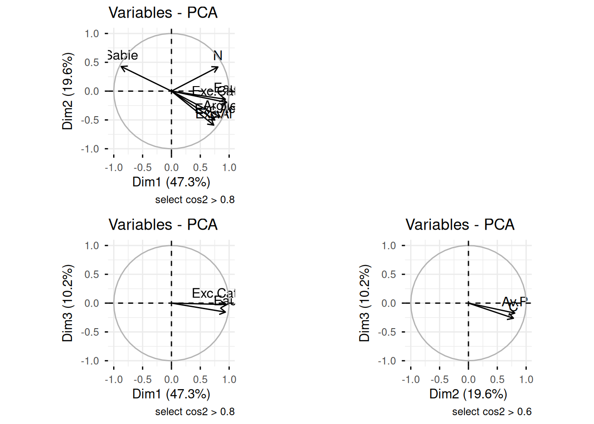
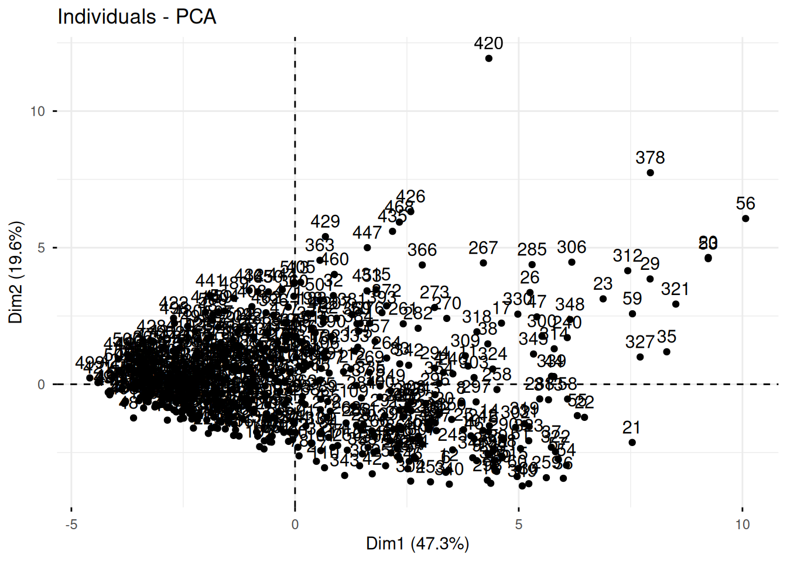
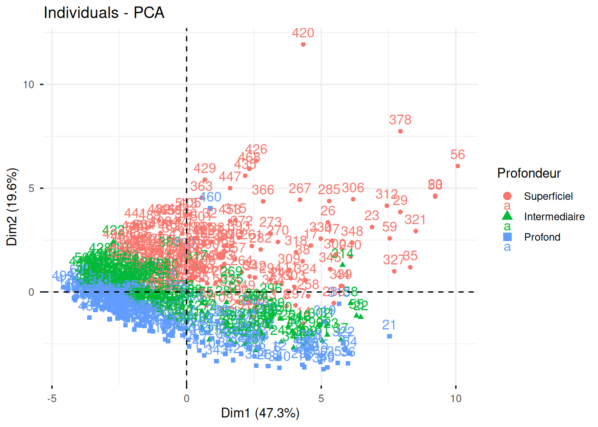
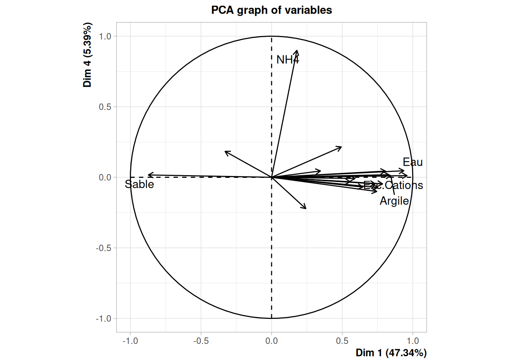

Code
knitr::opts_chunk$set(echo = TRUE, comment = NA,
cache = TRUE, message = FALSE,
warning = FALSE, eval = TRUE,
fig.align = "center")knitr::opts_chunk$set(echo = TRUE, comment = NA,
cache = TRUE, message = FALSE,
warning = FALSE, eval = TRUE,
fig.align = "center")Quarto permet de faire des rapports intégrant du code R, des sorties exécutées à partir de ce code et du texte présentant les analyses.
Ce document est rédigé avec quarto, le fichier source est disponible sur ce lien
La documentation officielle de quarto:
https://quarto.org/
Autres docs:
https://www.youtube.com/watch?v=Cwg7tdSdRvY
https://delladata.fr/de-r-markdown-a-quarto/
https://edutechwiki.unige.ch/fr/Quarto
Il s’agit ici de carcatériser les propriétés physico chimiques des sols. Pour ceci on a prélevé des échantillons dans diffférentes forêts de Borneo et on cherche à mettre en évidence des typologies de sols et à identifier des prélèvements qui se ressemblent. Les données consistent en la mesure de caractéristiques géochimiques de sols dans une forêt pluviale de Bornéo.
Nous utilisons la suite de packages tidyverse pour la manipulation de données, FactomineR pour la mise en oeuvre des analyses factorielles et éventiuellement factoextra pour des sorties plus jolies. (pour une exploration plus interactive on peut utiliser aussi Factoshiny ou explor).
Une bonne pratique consiste à ne charger que le nombre minimal de packages nécessaires. Evitez de commencer tous les codes avec la même liste de package, pesez l’intérêt de chacun d’eux.
library(tidyverse)
library(FactoMineR)
library(factoextra)Le raccourci pour ajouter un chunk R CTL + Alt + i
dta <- read.table(file = "https://marieetienne.github.io/datasets/donnees_sols.txt", sep = ";", header = TRUE)Proposer des résumés univariés de chaque variable présente dans le jeu de données.
dta |>
summary() Sol Site Profondeur pH
Length:539 Length:539 Length:539 Min. :3.400
Class :character Class :character Class :character 1st Qu.:4.400
Mode :character Mode :character Mode :character Median :4.670
Mean :4.632
3rd Qu.:4.880
Max. :5.700
Eau Av.P C N
Min. :0.170 Min. : 0.380 Min. :0.1400 Min. :0.01000
1st Qu.:1.540 1st Qu.: 1.940 1st Qu.:0.5200 1st Qu.:0.05000
Median :2.490 Median : 3.160 Median :0.8000 Median :0.07000
Mean :2.698 Mean : 4.132 Mean :0.9706 Mean :0.08056
3rd Qu.:3.740 3rd Qu.: 5.235 3rd Qu.:1.2800 3rd Qu.:0.10000
Max. :8.110 Max. :51.290 Max. :5.5900 Max. :0.31000
NO3 NH4 Exc.Ac Exc.Al
Min. : 0.000 Min. : 0.000 Min. : 0.250 Min. :0.030
1st Qu.: 0.400 1st Qu.: 1.655 1st Qu.: 1.990 1st Qu.:1.370
Median : 1.510 Median : 3.190 Median : 3.420 Median :2.720
Mean : 2.722 Mean : 5.044 Mean : 3.781 Mean :3.151
3rd Qu.: 2.965 3rd Qu.: 6.920 3rd Qu.: 5.205 3rd Qu.:4.475
Max. :23.600 Max. :40.430 Max. :10.570 Max. :9.720
Exc.Ca Exc.Mg Exc.K Exc.Na
Min. : 0.0000 Min. :0.0000 Min. :0.0000 Min. :0.00000
1st Qu.: 0.0400 1st Qu.:0.0700 1st Qu.:0.0500 1st Qu.:0.03000
Median : 0.0800 Median :0.2100 Median :0.1100 Median :0.05000
Mean : 0.3029 Mean :0.6194 Mean :0.1386 Mean :0.05237
3rd Qu.: 0.1900 3rd Qu.:0.8200 3rd Qu.:0.1700 3rd Qu.:0.07000
Max. :13.4900 Max. :5.3300 Max. :1.3000 Max. :0.27000
Exc.Cations SatBase Argile Limon
Min. : 0.380 Min. : 1.80 Min. : 8.00 Min. : 0.00
1st Qu.: 2.405 1st Qu.: 7.95 1st Qu.:16.00 1st Qu.:10.00
Median : 4.030 Median :13.24 Median :21.00 Median :13.00
Mean : 4.895 Mean :18.51 Mean :23.76 Mean :16.13
3rd Qu.: 6.765 3rd Qu.:24.67 3rd Qu.:32.00 3rd Qu.:21.50
Max. :17.300 Max. :97.54 Max. :53.00 Max. :47.00
Sable
Min. :15.0
1st Qu.:47.0
Median :67.0
Mean :60.1
3rd Qu.:74.0
Max. :87.0 On remarque que les facteurs sont importés en caractères. transformation de ces variables (Sol,site et Profondeur) en facteur:
dta <- dta |>
mutate(Sol = as.factor(Sol),
Site = as.factor(Site),
Profondeur = as.factor(Profondeur))
dta |>
summary() Sol Site Profondeur pH
Alluvial:180 292-11_A: 3 Intermediaire:180 Min. :3.400
Dunaire :180 292-11_B: 3 Profond :180 1st Qu.:4.400
Grès :179 292-11_H: 3 Superficiel :179 Median :4.670
292-11_M: 3 Mean :4.632
292-11_N: 3 3rd Qu.:4.880
292-11_O: 3 Max. :5.700
(Other) :521
Eau Av.P C N
Min. :0.170 Min. : 0.380 Min. :0.1400 Min. :0.01000
1st Qu.:1.540 1st Qu.: 1.940 1st Qu.:0.5200 1st Qu.:0.05000
Median :2.490 Median : 3.160 Median :0.8000 Median :0.07000
Mean :2.698 Mean : 4.132 Mean :0.9706 Mean :0.08056
3rd Qu.:3.740 3rd Qu.: 5.235 3rd Qu.:1.2800 3rd Qu.:0.10000
Max. :8.110 Max. :51.290 Max. :5.5900 Max. :0.31000
NO3 NH4 Exc.Ac Exc.Al
Min. : 0.000 Min. : 0.000 Min. : 0.250 Min. :0.030
1st Qu.: 0.400 1st Qu.: 1.655 1st Qu.: 1.990 1st Qu.:1.370
Median : 1.510 Median : 3.190 Median : 3.420 Median :2.720
Mean : 2.722 Mean : 5.044 Mean : 3.781 Mean :3.151
3rd Qu.: 2.965 3rd Qu.: 6.920 3rd Qu.: 5.205 3rd Qu.:4.475
Max. :23.600 Max. :40.430 Max. :10.570 Max. :9.720
Exc.Ca Exc.Mg Exc.K Exc.Na
Min. : 0.0000 Min. :0.0000 Min. :0.0000 Min. :0.00000
1st Qu.: 0.0400 1st Qu.:0.0700 1st Qu.:0.0500 1st Qu.:0.03000
Median : 0.0800 Median :0.2100 Median :0.1100 Median :0.05000
Mean : 0.3029 Mean :0.6194 Mean :0.1386 Mean :0.05237
3rd Qu.: 0.1900 3rd Qu.:0.8200 3rd Qu.:0.1700 3rd Qu.:0.07000
Max. :13.4900 Max. :5.3300 Max. :1.3000 Max. :0.27000
Exc.Cations SatBase Argile Limon
Min. : 0.380 Min. : 1.80 Min. : 8.00 Min. : 0.00
1st Qu.: 2.405 1st Qu.: 7.95 1st Qu.:16.00 1st Qu.:10.00
Median : 4.030 Median :13.24 Median :21.00 Median :13.00
Mean : 4.895 Mean :18.51 Mean :23.76 Mean :16.13
3rd Qu.: 6.765 3rd Qu.:24.67 3rd Qu.:32.00 3rd Qu.:21.50
Max. :17.300 Max. :97.54 Max. :53.00 Max. :47.00
Sable
Min. :15.0
1st Qu.:47.0
Median :67.0
Mean :60.1
3rd Qu.:74.0
Max. :87.0
# str(dta)
dta <- dta %>% mutate(Sol = as.factor(Sol),
Site = as.factor(Site),
Profondeur = factor(Profondeur), levels(c('Superficiel', 'Intermediaire', 'Profond'))) %>%
mutate(Profondeur = relevel(Profondeur, ref= "Superficiel"))
summary(dta) Sol Site Profondeur pH
Alluvial:180 292-11_A: 3 Superficiel :179 Min. :3.400
Dunaire :180 292-11_B: 3 Intermediaire:180 1st Qu.:4.400
Grès :179 292-11_H: 3 Profond :180 Median :4.670
292-11_M: 3 Mean :4.632
292-11_N: 3 3rd Qu.:4.880
292-11_O: 3 Max. :5.700
(Other) :521
Eau Av.P C N
Min. :0.170 Min. : 0.380 Min. :0.1400 Min. :0.01000
1st Qu.:1.540 1st Qu.: 1.940 1st Qu.:0.5200 1st Qu.:0.05000
Median :2.490 Median : 3.160 Median :0.8000 Median :0.07000
Mean :2.698 Mean : 4.132 Mean :0.9706 Mean :0.08056
3rd Qu.:3.740 3rd Qu.: 5.235 3rd Qu.:1.2800 3rd Qu.:0.10000
Max. :8.110 Max. :51.290 Max. :5.5900 Max. :0.31000
NO3 NH4 Exc.Ac Exc.Al
Min. : 0.000 Min. : 0.000 Min. : 0.250 Min. :0.030
1st Qu.: 0.400 1st Qu.: 1.655 1st Qu.: 1.990 1st Qu.:1.370
Median : 1.510 Median : 3.190 Median : 3.420 Median :2.720
Mean : 2.722 Mean : 5.044 Mean : 3.781 Mean :3.151
3rd Qu.: 2.965 3rd Qu.: 6.920 3rd Qu.: 5.205 3rd Qu.:4.475
Max. :23.600 Max. :40.430 Max. :10.570 Max. :9.720
Exc.Ca Exc.Mg Exc.K Exc.Na
Min. : 0.0000 Min. :0.0000 Min. :0.0000 Min. :0.00000
1st Qu.: 0.0400 1st Qu.:0.0700 1st Qu.:0.0500 1st Qu.:0.03000
Median : 0.0800 Median :0.2100 Median :0.1100 Median :0.05000
Mean : 0.3029 Mean :0.6194 Mean :0.1386 Mean :0.05237
3rd Qu.: 0.1900 3rd Qu.:0.8200 3rd Qu.:0.1700 3rd Qu.:0.07000
Max. :13.4900 Max. :5.3300 Max. :1.3000 Max. :0.27000
Exc.Cations SatBase Argile Limon
Min. : 0.380 Min. : 1.80 Min. : 8.00 Min. : 0.00
1st Qu.: 2.405 1st Qu.: 7.95 1st Qu.:16.00 1st Qu.:10.00
Median : 4.030 Median :13.24 Median :21.00 Median :13.00
Mean : 4.895 Mean :18.51 Mean :23.76 Mean :16.13
3rd Qu.: 6.765 3rd Qu.:24.67 3rd Qu.:32.00 3rd Qu.:21.50
Max. :17.300 Max. :97.54 Max. :53.00 Max. :47.00
Sable
Min. :15.0
1st Qu.:47.0
Median :67.0
Mean :60.1
3rd Qu.:74.0
Max. :87.0
Il y a différentes manières d’identifier le nombre de variables et d’individus. A travers la fonction str() ou sapply(), on a 3 variables qualitatives et 18 variables quantitatives On peut aussi demander le nombre de colonnes et de lignes (ncol, nrow)
str(dta)'data.frame': 539 obs. of 21 variables:
$ Sol : Factor w/ 3 levels "Alluvial","Dunaire",..: 3 1 1 1 1 1 1 1 1 1 ...
$ Site : Factor w/ 180 levels "292-11_A","292-11_B",..: 31 1 1 1 2 2 2 3 3 3 ...
$ Profondeur : Factor w/ 3 levels "Superficiel",..: 1 1 3 2 1 3 2 1 3 2 ...
$ pH : num 4.72 4.56 4.91 4.6 4.67 4.81 4.63 4.84 4.57 4.74 ...
$ Eau : num 3.49 2.76 3.39 2.84 3.39 4.28 3.77 4.12 4.98 4.58 ...
$ Av.P : num 4.28 7.02 1.75 4.67 4.54 0.7 1.84 4.2 0.88 2.39 ...
$ C : num 1.26 0.91 0.3 0.58 0.96 0.38 0.61 0.96 0.47 0.67 ...
$ N : num 0.11 0.12 0.06 0.09 0.14 0.08 0.1 0.12 0.08 0.11 ...
$ NO3 : num 0 10.13 1.84 4.87 1.84 ...
$ NH4 : num 6.71 2.43 2.17 2.52 3.39 0.66 0.75 3.21 2 2.16 ...
$ Exc.Ac : num 4.97 3.96 5.8 5.09 4.14 8.25 6.23 5.48 7.84 6.92 ...
$ Exc.Al : num 4.07 3.6 5.33 4.63 3.83 7.65 5.72 4.95 7.68 6.44 ...
$ Exc.Ca : num 0.15 0.32 0.15 0.17 0.91 0.2 0.33 1.42 0.3 0.67 ...
$ Exc.Mg : num 0.25 0.18 0.2 0.21 0.87 1.2 0.86 1.79 1.98 1.49 ...
$ Exc.K : num 0.24 0.21 0.15 0.15 0.16 0.17 0.12 0.22 0.16 0.17 ...
$ Exc.Na : num 0.07 0.06 0.05 0.05 0.06 0.06 0.06 0.07 0.06 0.07 ...
$ Exc.Cations: num 5.68 4.73 6.35 5.68 6.14 ...
$ SatBase : num 12.5 16.36 8.69 10.29 32.53 ...
$ Argile : int 27 27 31 27 33 43 33 37 45 37 ...
$ Limon : int 10 19 16 19 24 26 24 32 25 32 ...
$ Sable : int 63 54 52 54 43 31 43 31 30 31 ...sapply(dta, class) Sol Site Profondeur pH Eau Av.P
"factor" "factor" "factor" "numeric" "numeric" "numeric"
C N NO3 NH4 Exc.Ac Exc.Al
"numeric" "numeric" "numeric" "numeric" "numeric" "numeric"
Exc.Ca Exc.Mg Exc.K Exc.Na Exc.Cations SatBase
"numeric" "numeric" "numeric" "numeric" "numeric" "numeric"
Argile Limon Sable
"integer" "integer" "integer" nobs <- nrow(dta)
p <- ncol(dta)
any(is.na(dta))[1] FALSEsummary(dta$Profondeur) Superficiel Intermediaire Profond
179 180 180 Le fichier de données a 539 lignes et 21colonnes.
any(is.na(dta))[1] FALSEIl n’y a pas de données manquantes.
Observez le site 292-31_D
dta |> group_by(Site, Profondeur) |> count() # A tibble: 539 × 3
# Groups: Site, Profondeur [539]
Site Profondeur n
<fct> <fct> <int>
1 292-11_A Superficiel 1
2 292-11_A Intermediaire 1
3 292-11_A Profond 1
4 292-11_B Superficiel 1
5 292-11_B Intermediaire 1
6 292-11_B Profond 1
7 292-11_H Superficiel 1
8 292-11_H Intermediaire 1
9 292-11_H Profond 1
10 292-11_M Superficiel 1
# ℹ 529 more rowsNous avons le resultat dans le resumé univarié des variables. On peut aussi retrouver via la fonction ci-dessous:
dta %>%
summarise(pH_moyen=mean(pH, na.rm = TRUE)) pH_moyen
1 4.63154dta %>%
summarise(var_EAU =var(Eau, na.rm = TRUE),
var_Sodium =var(Exc.Na, na.rm = TRUE)) var_EAU var_Sodium
1 2.11306 0.001288402Ou de manière générale
dta |>
summarise(across(where(is.numeric), list(moy = mean, var = var))) pH_moy pH_var Eau_moy Eau_var Av.P_moy Av.P_var C_moy C_var
1 4.63154 0.1419045 2.697607 2.11306 4.131818 12.89734 0.9706122 0.4080084
N_moy N_var NO3_moy NO3_var NH4_moy NH4_var Exc.Ac_moy
1 0.08055659 0.002224225 2.722226 14.09726 5.044249 26.91682 3.781039
Exc.Ac_var Exc.Al_moy Exc.Al_var Exc.Ca_moy Exc.Ca_var Exc.Mg_moy Exc.Mg_var
1 5.203768 3.151095 4.813158 0.3028757 0.8644495 0.6193692 0.842742
Exc.K_moy Exc.K_var Exc.Na_moy Exc.Na_var Exc.Cations_moy Exc.Cations_var
1 0.1386271 0.01760183 0.05237477 0.001288402 4.894508 10.1526
SatBase_moy SatBase_var Argile_moy Argile_var Limon_moy Limon_var Sable_moy
1 18.50531 238.9387 23.76438 113.4741 16.12987 72.95708 60.10019
Sable_var
1 323.3766La somme des variables Limon, Argile et Sable devrait sommer à 100, mais ce n’est pas le cas à cause des erreurs d’arrondi. Le tableau ci-dessous se lit de la manière suivante. Total représente la somme des proportions exprimée en pourcentage et n le nombre d’observation pour lesquelles la somme des proportion de Limon, Sable et Argil donnent cette valeur.
count_percent<- dta %>%
mutate(Total = Limon + Argile + Sable) %>%
select(Total) |>
group_by(Total) |>
count()Pour appréhender le jeu de données, il est utile de commencer par comprendre les relations deux à deux entre les variables. On peut commencer par la corrélation entre celles-ci
library("corrplot")
dta_quanti <- dta |>
select(where(is.numeric))
cor.mat <- round(cor(dta_quanti),2)
corrplot(cor.mat, type="upper", order="hclust",
tl.col="black", tl.srt=45)
cor.mat pH Eau Av.P C N NO3 NH4 Exc.Ac Exc.Al Exc.Ca
pH 1.00 -0.31 -0.45 -0.57 -0.42 -0.17 -0.15 -0.30 -0.19 0.02
Eau -0.31 1.00 0.12 0.30 0.72 0.48 0.21 0.84 0.81 0.35
Av.P -0.45 0.12 1.00 0.66 0.49 0.30 0.07 -0.12 -0.22 0.20
C -0.57 0.30 0.66 1.00 0.72 0.24 0.23 -0.02 -0.13 0.31
N -0.42 0.72 0.49 0.72 1.00 0.66 0.22 0.40 0.35 0.53
NO3 -0.17 0.48 0.30 0.24 0.66 1.00 0.05 0.29 0.31 0.50
NH4 -0.15 0.21 0.07 0.23 0.22 0.05 1.00 0.11 0.10 0.09
Exc.Ac -0.30 0.84 -0.12 -0.02 0.40 0.29 0.11 1.00 0.98 -0.03
Exc.Al -0.19 0.81 -0.22 -0.13 0.35 0.31 0.10 0.98 1.00 -0.02
Exc.Ca 0.02 0.35 0.20 0.31 0.53 0.50 0.09 -0.03 -0.02 1.00
Exc.Mg -0.14 0.71 0.22 0.30 0.66 0.48 0.10 0.44 0.43 0.54
Exc.K -0.38 0.63 0.61 0.54 0.71 0.46 0.16 0.37 0.31 0.39
Exc.Na -0.42 0.55 0.40 0.39 0.46 0.23 0.23 0.43 0.37 0.17
Exc.Cations -0.27 0.94 0.06 0.19 0.67 0.51 0.14 0.85 0.84 0.44
SatBase -0.16 0.35 0.50 0.45 0.60 0.48 0.02 -0.04 -0.07 0.70
Argile -0.02 0.83 -0.16 -0.09 0.50 0.51 0.07 0.81 0.85 0.33
Limon -0.04 0.72 -0.09 -0.03 0.49 0.52 0.02 0.66 0.69 0.34
Sable 0.03 -0.84 0.13 0.07 -0.53 -0.55 -0.05 -0.79 -0.83 -0.35
Exc.Mg Exc.K Exc.Na Exc.Cations SatBase Argile Limon Sable
pH -0.14 -0.38 -0.42 -0.27 -0.16 -0.02 -0.04 0.03
Eau 0.71 0.63 0.55 0.94 0.35 0.83 0.72 -0.84
Av.P 0.22 0.61 0.40 0.06 0.50 -0.16 -0.09 0.13
C 0.30 0.54 0.39 0.19 0.45 -0.09 -0.03 0.07
N 0.66 0.71 0.46 0.67 0.60 0.50 0.49 -0.53
NO3 0.48 0.46 0.23 0.51 0.48 0.51 0.52 -0.55
NH4 0.10 0.16 0.23 0.14 0.02 0.07 0.02 -0.05
Exc.Ac 0.44 0.37 0.43 0.85 -0.04 0.81 0.66 -0.79
Exc.Al 0.43 0.31 0.37 0.84 -0.07 0.85 0.69 -0.83
Exc.Ca 0.54 0.39 0.17 0.44 0.70 0.33 0.34 -0.35
Exc.Mg 1.00 0.69 0.42 0.79 0.76 0.67 0.62 -0.69
Exc.K 0.69 1.00 0.61 0.62 0.64 0.43 0.39 -0.44
Exc.Na 0.42 0.61 1.00 0.52 0.36 0.33 0.30 -0.34
Exc.Cations 0.79 0.62 0.52 1.00 0.42 0.89 0.77 -0.89
SatBase 0.76 0.64 0.36 0.42 1.00 0.26 0.31 -0.30
Argile 0.67 0.43 0.33 0.89 0.26 1.00 0.76 -0.95
Limon 0.62 0.39 0.30 0.77 0.31 0.76 1.00 -0.92
Sable -0.69 -0.44 -0.34 -0.89 -0.30 -0.95 -0.92 1.00En utilisant le package GGallyet notamment la fonction ggpairs, proposer une représentation bivariée des différents couples de variables.
library(GGally)
ggpairs(dta, columns = 4:21)La visualisation est difficile, d’où l’intérêt d’une approche multivariée.
Avant celà , on peut essayer de visualiser le lien entre une variable qualitative (Profondeur ou Type de Sol) et variables quantitatives au travers d’une boîte à moustaches. Par exemple
dta %>%
ggplot() +
aes(x= Profondeur, y = Argile) +
geom_boxplot() +
xlab('Classe de Profondeur')## ou boxplot(dta$Argile~ dta$Profondeur)Le but est de faire émerger des typologies de sol. Pour le moment nous mettons de coté les variables qualitatives. Pour visualiser les données on peut commencer par une ACP. l’ACP ne traite que des variables quantitatives, on va considérer les autres variables comme supllémentaires, autrement, dit l’information qu’elles contiennent ne contribuent pa sà la définition des axes.
Pour faire le lien avec le cours on va définir les objets du cours dans le cadre de cet exercice. La matrice des données est \(X\).
X <- dta %>%
select(where(is.numeric)) %>% as.matrix()
dim(X)[1] 539 18Par défaut le poids est 1/n sauf si autre bonne raison
Les poids sont stockés dans la matrice \(W\)
W <- diag(1/nobs, ncol = nobs, nrow = nobs)
dim(W)[1] 539 539Si on considère une distance euclidienne, la matrice de distance \(M\) est l’identité.
p_quanti <- ncol(X)
M <- diag(1, ncol = p_quanti, nrow = p_quanti)
dim(M)[1] 18 18Le cours dit que si \(X\) est cebtrée alors l’inertie vaut \(tr(X^\top W X M)\)
Pour vérifier on va définir la matrice \(X\) centrée et calculer l’inertie à l’aide de la formule du cours. La fonction tr n’est pas disponible dans R par défaut
tr <- function(X){
sum(diag(X))}X_center <- dta |> select(where(is.numeric)) |> scale(center = TRUE, scale = FALSE)
inertie <- tr(t(X_center) %*% W %*% X_center %*% M)L’inertie vaut 825.6839644.
Les axes principaux seront les vecteurs propres et l’inertie portée par chaque axe, sera la valeur propre associée
VM <- t(X_center) %*% W %*% X_center %*% M
inertia_dec <- eigen(VM)$valuespour faire une ACP non normée dans R, on utilise la fonction PCAde FactomineR, en précisant l’option scale=FALSE pour indiquer que l’on veut un ACP non normée
Par défaut la fonction PCA fait une ACP normée !!
dta_pca <- PCA(X = dta, scale.unit = FALSE,
quali.sup = c(1,2,3), ncp = 18)
#library(Factoshiny)Si on fait une ACP non normée, on constate que le Sable et SatBase contribuent beaucoup plus à la formation des axes que les autres variables. EN effet dans une ACP non normée, l’information (= l’inertie) portée par une variable est la variance de cette variable . Les variances des variables (ordonnées par ordre décroissant) sont rappelées ci-dessous :
ordered_variance <- dta |>
summarise(across(where(is.numeric), ~var(.x)*(nobs-1)/nobs)) |>
pivot_longer( cols = everything(), names_to = "Variable", values_to = "Variance") |>
mutate(Variance = round(Variance, 2)) |>
arrange(-Variance)
ordered_variance # A tibble: 18 × 2
Variable Variance
<chr> <dbl>
1 Sable 323.
2 SatBase 238.
3 Argile 113.
4 Limon 72.8
5 NH4 26.9
6 NO3 14.1
7 Av.P 12.9
8 Exc.Cations 10.1
9 Exc.Ac 5.19
10 Exc.Al 4.8
11 Eau 2.11
12 Exc.Ca 0.86
13 Exc.Mg 0.84
14 C 0.41
15 pH 0.14
16 Exc.K 0.02
17 N 0
18 Exc.Na 0 Ainsi, puisque les variances des variables Sable et SatBase (et dans une moindre mesure Argile et Limon) sont très grandes devant les autres, ces variables contribuent davantage à la formation des premiers axes. Pour bien comprendre, il faut se rendre compte qu’en résumant le jeu de données aux seules variables Sable et SatBase, on représente déjà un pourcentage d’inertie de 67.98.
Pour voir comment l’information d’une variable se disperse sur les différentes dimensions on peut regarder la contribution de cette variable à la construction des différents axes.
Par exemple pour le Sable et le pH.
round(dta_pca$var$contrib[c("Sable", "pH" ),],2) Dim.1 Dim.2 Dim.3 Dim.4 Dim.5 Dim.6 Dim.7 Dim.8 Dim.9 Dim.10 Dim.11
Sable 56.42 6.92 0.21 0.66 0.09 0.01 2.19 0.01 0.00 0.01 0.09
pH 0.00 0.00 0.02 0.00 0.21 0.25 0.91 0.11 1.13 2.78 26.47
Dim.12 Dim.13 Dim.14 Dim.15 Dim.16 Dim.17 Dim.18
Sable 33.31 0.02 0.05 0.01 0 0 0
pH 0.31 57.55 10.24 0.02 0 0 0Si vos données sont toutes dans la même unité de mesure et varient dans des gammes de valeurs identiques: l’ACP non-normée est souvent recommandée.
Si vos données sont dans des unités de mesure différentes et varient dans des gammes de valeurs différentes: l’ACP normée est recommandée
l’ACP non normée est basée sur la matrice de covariances, qui se calcule par \(VM =t(X) W W M\), avec \(M\) la matrice identité.
l’ACP normée est basée sur la matrice de corrélations, qui se calcule par \(VM =t(X) W W M\), mais avec \(M\) la matrice diagnonale dont chaque terme diagonale est l’inverse de la variance de la variable concernée
Ici les variables ont des ordres de grandeur différent, la mesure de pH n’est pas comparable avec la teneur en Sodium par exemple, on va faire une ACP normée, on propose donc d’équilibrer le poids des variables dans la construction des projections en proposant une ACP normée. Mais avant de passer à cette ACP non normée, on peut vérifier que les vecteurs propres obtenus “à la main# coincident avec les vecteurs propres obtenus par la fonction PCA. On le vérifier sur les deux premiers axes. Pour le vérifier on divise terme à terme chaque terme du vecteur propre obtenu avec PCA par le terme correspondant obtenu à la main.
dta_pca$svd$V[,1:2] / eigen(VM)$vectors[,1:2 ] [,1] [,2]
[1,] 1 -1
[2,] 1 -1
[3,] 1 -1
[4,] 1 -1
[5,] 1 -1
[6,] 1 -1
[7,] 1 -1
[8,] 1 -1
[9,] 1 -1
[10,] 1 -1
[11,] 1 -1
[12,] 1 -1
[13,] 1 -1
[14,] 1 -1
[15,] 1 -1
[16,] 1 -1
[17,] 1 -1
[18,] 1 -1Les variables illustratives ou supplémntaires n’interviennent pas pour la construction des composantes ou axes. Elles sont utilisées après coup pour mieux comprendre / commenter les résultats. Des individus peuvent aussi être traités comme illustratifs.
Dans notre exemple, seules les variables qualitatives sont choisies en supplémentaires.
Dans une ACP normée, la somme des valeurs propres est égale au nombre de variables.
On peut à nouveau le vérifier à la main. Le cours dit que si \(X\) est cebtrée alors l’inertie vaut $tr(X^W X M), $ cette fois \(M\) est la matrice diagonale contenant l’inverse des variances.
p_quanti <- ncol(X)
variance <- dta_quanti |>
summarise(across(where(is.numeric), ~var(.x)*(nobs-1)/nobs)) |>
pivot_longer( cols = everything(), names_to = "Variable", values_to = "Variance") |>
pull(Variance)
M_norm <- diag(1/variance, ncol = p_quanti, nrow = p_quanti)
dim(M_norm)[1] 18 18VM_norm <- t(X_center) %*% W %*% X_center %*% M_norm
inertie_norm <- tr(VM_norm)L’inertie dans l’ACP normée vaut 18.
Pour finir l’ACP “à la main”, on peut voir que l’on pourrait toutes les informations pertinentes à partir de la seule étude de la matrice de la corrélation
Par exemple, l’éboulis des valeurs propres.
eigen représenter la suite décroissante des valeurs propres. A partir de combien de vecteurs de base considérez-vous que l’information apportée devient négligeable?## Verifier que Cor(data) = t(X_reduit) %*% W %*% X_reduit
X_reduit <- X_center %*% sqrt(M)
correlation_mat <- t(X_reduit) %*% W %*% X_reduit
max(abs(cor(dta_quanti)-correlation_mat))[1] 321.7766Cor_eigen <- eigen(correlation_mat)
valeurspropres <- Cor_eigen$values
vecteurspropres <- Cor_eigen$vectors
dta.vp <- data.frame(index = 1:length(valeurspropres), valeurspropres = valeurspropres, inertiepercent = cumsum(valeurspropres)/sum(valeurspropres))
dta.vp index valeurspropres inertiepercent
1 1 5.459321e+02 0.6611877
2 2 2.093213e+02 0.9147004
3 3 2.772075e+01 0.9482734
4 4 2.138866e+01 0.9741776
5 5 1.070946e+01 0.9871480
6 6 6.876714e+00 0.9954765
7 7 2.355919e+00 0.9983298
8 8 6.460148e-01 0.9991122
9 9 2.708809e-01 0.9994403
10 10 1.789621e-01 0.9996570
11 11 1.128154e-01 0.9997937
12 12 8.284054e-02 0.9998940
13 13 5.151668e-02 0.9999564
14 14 2.953466e-02 0.9999921
15 15 5.594256e-03 0.9999989
16 16 6.983405e-04 0.9999998
17 17 1.825201e-04 1.0000000
18 18 7.816816e-06 1.0000000dta.vp |>
mutate(diffinertie = valeurspropres-lead(valeurspropres)) index valeurspropres inertiepercent diffinertie
1 1 5.459321e+02 0.6611877 3.366108e+02
2 2 2.093213e+02 0.9147004 1.816006e+02
3 3 2.772075e+01 0.9482734 6.332085e+00
4 4 2.138866e+01 0.9741776 1.067920e+01
5 5 1.070946e+01 0.9871480 3.832751e+00
6 6 6.876714e+00 0.9954765 4.520795e+00
7 7 2.355919e+00 0.9983298 1.709904e+00
8 8 6.460148e-01 0.9991122 3.751339e-01
9 9 2.708809e-01 0.9994403 9.191881e-02
10 10 1.789621e-01 0.9996570 6.614671e-02
11 11 1.128154e-01 0.9997937 2.997485e-02
12 12 8.284054e-02 0.9998940 3.132386e-02
13 13 5.151668e-02 0.9999564 2.198201e-02
14 14 2.953466e-02 0.9999921 2.394041e-02
15 15 5.594256e-03 0.9999989 4.895915e-03
16 16 6.983405e-04 0.9999998 5.158204e-04
17 17 1.825201e-04 1.0000000 1.747033e-04
18 18 7.816816e-06 1.0000000 NA#lead est une fonction positionnelle. elle
# permet d'accèder à une valeur stockée dans une ligne inférieure: elle décale d'un rang le vecteur. le 2eme élément devient le 1er et le 3eme devient le 2eme et ainsi de suite
dta.vp |> ggplot() + geom_col(aes(x=index, y = valeurspropres)) dta.vp |> ggplot() + geom_line(aes(x=index, y = inertiepercent)) + ylim(c(0,1)) + ylab("Pourcentage d'inertie représentée")On peut maintenant mettre en place une ACP normée, avec factomineR et en utilisant et factoextra pour des sorties plus agréables. On précise que l’ACP est normée grace à l’option scale.unit = TRUE.
dta_pca <- PCA(X = dta, scale.unit = TRUE, quali.sup = c(1,2,3), ncp = 18, graph = FALSE)
#library(Factoshiny)le champs eig de l’objet dta_pcacontient les informations sur les valeurs propres
On peut notamment s’intéresser à la qualité globale des représentations
sur le plan 1-2 : on représente 66.9241274
sur le plan 1-3 : on représente 57.5578374
Représentez l’éboulis des valeurs propres à partir de la sortie dta_pca (ce qui a déjà été fait à la main précédemment).
dta_pca$eig |>
as.data.frame() |>
rowid_to_column() |>
ggplot() + geom_col(aes(x=rowid, y =eigenvalue)) Il existe plusieurs “règles” ce qui est le signe qu’il n’y a pas une seule façon de faire mais des guides
Règle de l’ébouli des valeurs propres: garder les axes correspondant aux valeurs propres situées avant le point d’inflexion (cassure, coude) sur le graphes des valeurs propres.
Règle de Kaiser: garder les axes correspondant aux valeurs propres supérieures à la moyenne des valeurs propres:
supérieures à 1 en ACP normée
supeérieur à Inertie/p en ACP non normée
Règle empirique: garder les facteurs expliquant un pourcentage de variance cumulée satisfaisant (géneralement 80%)
Dans notre exemple, avec 3 axes on représente 77.1397764 de l’inertie, l’axe 4 est proche de la valeur moyenne d’inertie.
Tout nous incite à regarder les 3 et éventuellement 4 premiers axes.
On peut visualiser le cercle des corrélations
Le package factoextradonne des outils pour produire des sorties les plus lisibles possibles.
Pour représenter le cercle des corrélations dans un plan principal, on utilise la fonction fviz_pca_var. Sur chaque graphe, qu’est ce qui est représenté?
fviz_pca_var(dta_pca,
axes = c(1, 2)) # Numéro des axes à représenter fviz_pca_var(dta_pca,
axes = c(1, 3)) #
fviz_pca_var(dta_pca,
axes = c(2, 3)) # Pour plus de lisibilité, refaites le même graphique avec seulement les variables bien représentées (par exemple celles pour lesquelles le cos2 de l’angle entre la variable initiale et la variable projetée dans le plan représenté est supérieure à 0.8 ou 0.6 selon les cas). Jouer sur les différentes repésentations pour bien comprendre quelle information est disponible sur chaque projection, on peut arranger les graphiques les uns à coté des autres pour une visualisation plus commode.
pplotvar_12 <- fviz_pca_var(dta_pca,
axes = c(1, 2),
select.var = list(cos2 = 0.8)) # Numéro des axes à représenter
pplotvar_13 <- fviz_pca_var(dta_pca,
axes = c(1, 3),
select.var = list(cos2 = 0.8)) #
pplotvar_23 <- fviz_pca_var(dta_pca,
axes = c(2, 3),
select.var = list(cos2 = 0.6)) #
## si on ne veut pas importer tout un package, on peut indiquer qu'on utilise la fonction ggarrange du package ggpur avec la synthaxe suivante
## on exécute le code uniquement si le package est est installé
if("ggpubr" %in% installed.packages()[,1]){
ggpubr::ggarrange( pplotvar_12 + labs(caption = 'select cos2 > 0.8'),
NULL,
pplotvar_13 + labs(caption = 'select cos2 > 0.8'),
pplotvar_23 + labs(caption = 'select cos2 > 0.6'),
ncol = 2, nrow = 2)
}
Il est important de noter qu’on peut grâce à dta_acp, tracer ce graphique nous même et donc modifier son apparence à notre guise. Par ailleurs les fonction de factoextra renvoie des objets de type ggplot que l’on peut aisément modifier. (aucune excuse pour les graphiques laids !)
On se posait la question de l’intérêt d’aller voir l’axe 4, la visualisation ci-dessous nous montre que l’axe 4 porte essentiellement l’information sur NH4.
pplotvar_14 <- fviz_pca_var(dta_pca,
axes = c(1, 4),
select.var = list(cos2 = 0.8)) #
pplotvar_14 
A l’aide des contributions des différentes variables à la définition des axes, on peut comprendre l’information résumée par ces axes.
dta_pca$var$contrib |> as.data.frame() |> arrange(-Dim.1) |> select(Dim.1) Dim.1
Exc.Cations 10.7948976
Eau 10.2869537
Sable 8.9320337
Argile 8.3692915
Exc.Mg 8.0680012
N 7.6257192
Limon 7.2482479
Exc.Ac 6.6410790
Exc.K 6.5019985
Exc.Al 6.3103633
NO3 4.8972792
Exc.Na 4.0962613
SatBase 3.6327958
Exc.Ca 2.8569555
C 1.4042632
pH 1.2715181
Av.P 0.6866580
NH4 0.3756832dta_pca$var$contrib |> as.data.frame() |> arrange(-Dim.2)|> select(Dim.2) Dim.2
Av.P 18.3416002
C 17.2698714
Exc.Al 9.8791351
SatBase 9.3284152
Exc.Ac 7.1350777
Argile 5.6487034
Exc.K 5.5144861
Sable 5.1690662
N 4.9797246
pH 4.5458035
Exc.Ca 3.4929128
Limon 3.3331633
Exc.Na 1.8388125
Exc.Cations 1.0983771
NO3 0.8067869
Eau 0.5672494
NH4 0.5379330
Exc.Mg 0.5128816dta_pca$var$contrib |> as.data.frame() |> arrange(-Dim.4) |> select(Dim.4) Dim.4
NH4 83.32422550
Av.P 5.07745293
Exc.Ca 4.76531991
pH 3.47674191
Exc.K 1.04204242
Exc.Ac 0.54618975
NO3 0.49368347
Limon 0.22554066
Eau 0.22252392
Exc.Al 0.22067882
C 0.20730224
N 0.19798282
SatBase 0.10528835
Exc.Mg 0.03464235
Sable 0.02775744
Exc.Cations 0.01430037
Argile 0.01058951
Exc.Na 0.00773764La description des axes
On peut aussi utiliser uune visualisation plus graphique en utilisant factoextra
contri var axe 1
contrib_axe1 <- fviz_contrib(dta_pca, choice = 'var', axes = 1)
contrib_axe2 <- fviz_contrib(dta_pca, choice = 'var', axes = 2)
contrib_axe3 <- fviz_contrib(dta_pca, choice = 'var', axes = 3)
contrib_axe4 <- fviz_contrib(dta_pca, choice = 'var', axes = 4)
if("ggpubr" %in% installed.packages()[,1]){
ggpubr::ggarrange( contrib_axe1,
contrib_axe2,
contrib_axe3,
contrib_axe4,
ncol = 2, nrow = 2)
}
Pour représenter la projection des individus dans un plan principal, on utilise la fonction fviz_pca_ind.
# Représentation dans le premier plan_principal
fviz_pca_ind(dta_pca,
axes = c(1, 2)) # Numéro des axes à représenter 
fviz_pca_ind, en rajoutant col.ind = donnees_sols$Sol, coloriez les individus selon leur profondeur.# # Représentation dans le premier plan_principal
fviz_pca_ind(dta_pca,
axes = c(1, 2),
habillage=3) 
fviz_pca_ind, en rajoutant col.ind = donnees_sols$Sol, coloriez les individus selon leur type de sol.# # Représentation dans le premier plan_principal
fviz_pca_ind(dta_pca,
axes = c(1, 2),
habillage=1) # Représentation dans le premier plan_principal
plot.PCA(dta_pca,
axes = c(1,4), invisible=c('ind.sup'),
habillage=1, ## numero de la variable quali à utiliser pour l'habillage
label ='none')plot.PCA(dta_pca, axes=c(1,4),invisible=c('quali','ind.sup'),habillage=1,label ='none')plot.PCA(dta_pca,choix='var',
select='cos2 0.7', ## pour représenter seulement les variables dont le cos2 > 0.7
unselect=0, axes = c(1,4) )
il fallait chercher l’axe 4 pour bien illustrer les différences entre grès et dunaire, l’axe 4 est presque exclusivement l’information sur le NH4.